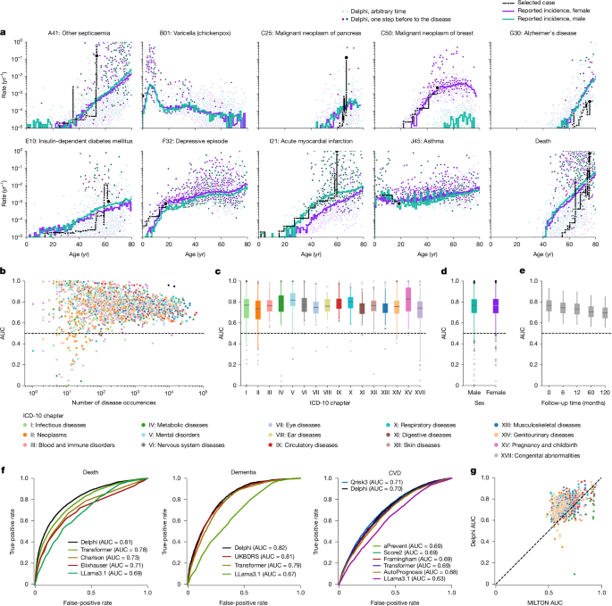
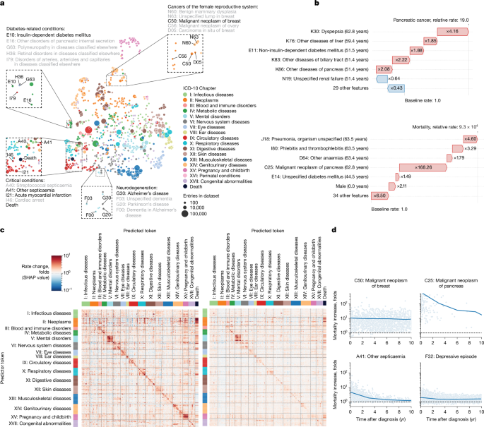

Learning the natural history of human disease with generative transformers
A GPT-based model called Delphi-2M, trained on 402,799 UK Biobank participants, simultaneously predicts the rates of more than 1,000 diseases with accuracy matching single-disease clinical models. Its generative capacity enables sampling of synthetic future health trajectories for up to 20 years, enabling population-scale disease burden estimation and privacy-preserving AI training. Explainable AI (SHAP) reveals clusters of co-morbidities and their time-dependent consequences, but also exposes systematic biases inherited from UK Biobank's data-collection heterogeneity — underscoring that such models are powerful complements, not yet replacements, for clinical pipelines.
Why It Matters
- First population-scale, pan-disease generative health model. Delphi-2M is the first transformer model to simultaneously predict rates across the full ICD-10 spectrum (>1,000 diagnoses) for every individual, at every age — a qualitative leap beyond single-disease risk tools.
- Generative trajectories unlock new use cases. By sampling future health sequences, the model produces synthetic cohorts from birth that preserve population-level co-morbidity statistics without exposing personal data — directly enabling privacy-safe AI development.
- Cross-national transferability without retraining. Delphi-2M trained on UK data achieves AUC 0.67 on 1.93 million Danish individuals with zero parameter changes — demonstrating that learned disease patterns generalize across healthcare systems.
- Temporal XAI for epidemiology. SHAP analysis at scale quantifies how each past diagnosis modulates future disease rates over time — revealing, for instance, that cancer elevates mortality for years while septicaemia's effect decays within 5 years.
- Honest bias disclosure. The paper explicitly characterizes "immortality bias," healthy-volunteer selection, data-source missingness artifacts, and demographic disparities — setting a transparency standard for health AI.
Why Nature (Editorial Fit)
- Broad scientific scope: the work covers computational science, disease biology, and AI methodology simultaneously — matching Nature's cross-disciplinary mandate.
- Population scale with rigorous external validation: training on ~400 k individuals and validating on ~1.9 million from a different country with unchanged parameters is a rare methodological bar for biological AI papers.
- Genuinely new capability: generative sampling of synthetic health futures is a novel contribution to epidemiology, not an incremental improvement over existing risk tools.
- Dual translational impact: results feed directly into precision medicine (personalized risk stratification) and healthcare planning (projected disease burden at population level).
- Open-science posture: code (GitHub: gerstung-lab/delphi) and model checkpoint are publicly released, matching Nature's reproducibility expectations.
Core Data — Sources & Volume
- Training cohort
- UK Biobank — 502,538 participants recruited 2006–2010, aged 37–73 at recruitment. Delphi-2M used 402,799 (80%) for training and 100,639 (20%) for validation. Data span birth-to-2020; longitudinal testing on 471,057 alive participants up to July 2022. Restricted access: ukbiobank.ac.uk.
- External validation
- Danish national registries (Danish National Patient Registry + Danish Register of Causes of Death) — 1.93 million individuals, aged 50–80 on 1 January 2016, with disease records from 1978 to 2018. Restricted access via Danish Health Data Authority: sundhedsdatastyrelsen.dk.
- Disease vocabulary
- 1,256–1,258 distinct ICD-10 level-3 codes covering chapters I–XVII plus neoplasms (chapter II from cancer registry); lifestyle tokens (sex, BMI, smoking, alcohol) add 12 further tokens.
- Disease token volume
- Danish dataset alone contributed 11.51 million disease tokens across 796 ICD-10 codes (each with ≥25 cases); predictions evaluated on 0.96 million tokens.
- UK Biobank sub-sources
- First-occurrence data assembled from primary care (cat. 3000), inpatient hospital admissions (cat. 2000), death registry (fields 40001/40002), self-report questionnaires (field 20002), and cancer registry (fields 40005/40006).
- Comparison models
- QRisk3, Score2, Prevent, Framingham (CVD); UKBDRS (dementia); Charlson/Elixhauser (death); MILTON (67-biomarker ML panel, 410 diseases); LLama3.1(8B); AutoPrognosis v2.0.
- Availability
- UK Biobank: restricted access by application. Danish registries: secure environment by application. Source data and code available publicly (see above).
| Dataset | Role | Volume / Scope | Access |
|---|---|---|---|
| UK Biobank (UKB) | Model training & internal validation | ~503 k participants, 1978–2022; 402,799 training / 100,639 validation | ukbiobank.ac.uk |
| Danish National Patient Registry (LPR) | External cross-national validation | 1.93 M individuals, 50–80 yrs, 1978–2018; 11.51 M disease tokens | sundhedsdatastyrelsen.dk |
| Danish Register of Causes of Death | Mortality ground truth (external) | National, since 1970, linked via CPR number | sundhedsdatastyrelsen.dk |
| ICD-10 code system (WHO) | Disease tokenization vocabulary | 1,256 level-3 codes, chapters I–XVII + neoplasms | Open standard |
| UK Office for National Statistics (ONS) | Mortality reference for bias assessment | National UK population mortality rates | ons.gov.uk |
Note: participant counts are taken verbatim from the article. The Danish data extract covers individuals aged 50–80 on 2016-01-01; the exact total Danish population size is 1.93 million as stated in the Methods section.
Core Methods
- Modified GPT-2 architecture (Delphi): replaces discrete positional encoding with continuous age encoding (sine/cosine basis), adds an exponential waiting-time output head for inter-event timing (competing-exponentials model), and amends causal attention masks to exclude same-time co-occurring tokens.
- Multi-disease incidence prediction: autoregressive next-token prediction across 1,258 states (ICD-10 codes + lifestyle + padding) yields calibrated per-day rate estimates for each disease, evaluated by age–sex-stratified AUC (average ≈ 0.76 internal; 0.67 external).
- Generative trajectory sampling: iterative sampling of (token, time) pairs from the competing-exponential model generates full synthetic health timelines, starting from birth or any partial history, for up to 20 years.
- Scaling-law hyperparameter screen: systematic grid over embedding dimensions, layers, and heads confirms optimal model size of ~2.2 M parameters for the UKB dataset size.
- SHAP-based explainability: PartitionExplainer SHAP applied to all 100,639 validation trajectories to quantify how each past diagnosis token shifts future disease rates — producing a 778 × 778 influence matrix per time horizon.
- Bias and fairness analysis: immortality/recruitment bias characterization, data-source missingness analysis, ethnic-background and deprivation-index stratified AUC, DeLong's method for CI estimation, and Bonferroni-corrected subgroup testing.
- Cross-national zero-shot transfer: UKB-trained weights applied to Danish data without parameter adjustment, with ICD-8-to-ICD-10 code mapping for pre-1995 Danish records.
Core Figures & Tables





Tables: 0 main-text tables (Tables = 0); Supplementary contains Tables 1–5 (cross-entropy ablations, all-disease AUCs, method comparison, subgroup biases, UKB field IDs) and Supplementary Figs. 1–12.